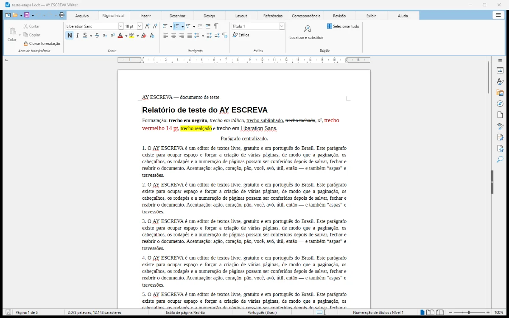
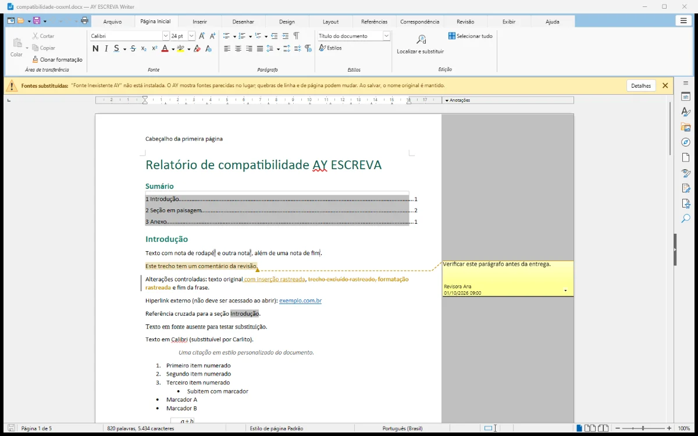

Escreva sem pagar nada. Sem cadastro.
O AY ESCREVA é um editor de textos em português do Brasil, com faixa de opções parecida com a do Word, que abre e salva DOCX e ODT, exporta PDF e imprime — tudo no seu computador.
Versão 0.2.0 (versão inicial de testes) · Windows 11 de 64 bits · 208 MB · 19 de outubro de 2026 · instalador ainda sem assinatura digital.
SHA-256, instruções e outros sistemas

Feito para quem escreve no dia a dia
Gratuito de verdade
Sem mensalidade, sem período de avaliação e sem ferramentas bloqueadas. Não pede conta nem cadastro para baixar ou usar.
Funciona sem internet
Abrir, editar, salvar, imprimir e exportar PDF funcionam offline. Os documentos ficam no seu computador.
Abre arquivos do Word
Lê e salva DOCX e ODT, abre DOC, RTF e TXT. Notas, comentários, alterações controladas, tabelas e imagens são preservados nos testes.
Faixa de opções familiar
Arquivo, Página Inicial, Inserir, Desenhar, Design, Layout, Referências, Correspondência, Revisão, Exibir e Ajuda — na ordem que você já conhece.
Avisa antes de perder algo
Ao salvar fora do formato nativo, mostra o que pode se perder e oferece guardar uma cópia completa. Avisa quando uma fonte foi substituída.
Privacidade e segurança
Macros de documentos não são executadas, imagens da internet não são baixadas ao abrir e nada do seu texto é enviado a servidores.
Revisão, notas e PDF sem complicação
Comentários e alterações controladas aparecem na margem, como você espera. O sumário se atualiza a partir dos títulos, há notas de rodapé e de fim, legendas, referência cruzada e índice.
Exporte PDF comum, PDF/A para arquivamento ou PDF/UA acessível. Imprima com prévia pelas impressoras do Windows.

Transparência: esta é uma versão de testes
O que já está validado
Criar documentos de várias páginas, formatar, inserir tabelas e imagens, salvar em ODT e DOCX, reabrir, exportar PDF e imprimir — com testes automatizados no Windows 11 de 64 bits.
O que ainda falta
Versões para Windows 10, macOS e Linux, assinatura digital do instalador e algumas ferramentas, como marca-texto e modo de leitura. Lista completa de limitações.